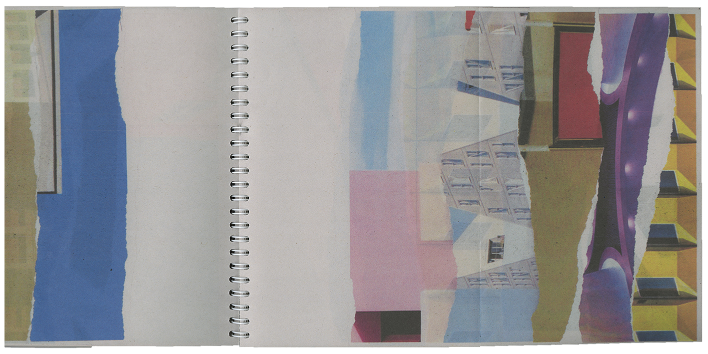
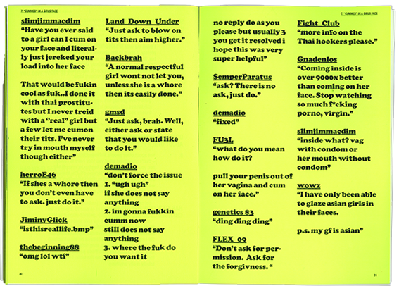
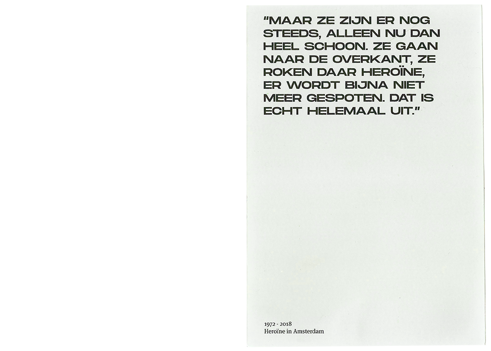
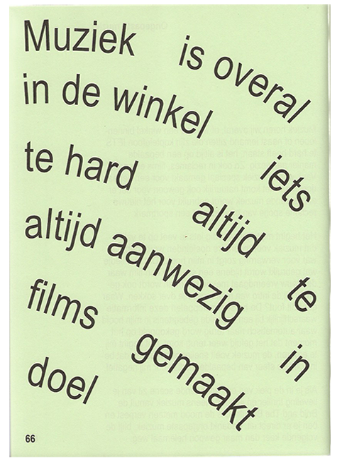
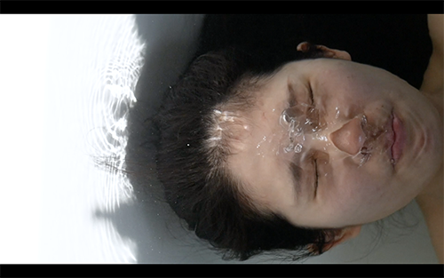

Graphic designer based in Amsterdam, specialised in editorial design, book design, web design & concept developing. Let’s say: a little bit of everything. Currently studying Graphic Design at the Royal Academy of Art, The Hague and working as a Graphic Designer at Subbacultcha, Amsterdam.
2016 - now
Royal Academy of Art, The Hague
Bachelor Graphic Design
2013 – 2016
Mediacollege Amsterdam
MBO Graphic Design
Royal Academy of Art, The Hague
Bachelor Graphic Design
2013 – 2016
Mediacollege Amsterdam
MBO Graphic Design
'Ziektes' documentation

A multidisciplinary installation about a topic documented in this publication. The overall topic is ‘diseases’ and transcoding this into different kind of visual languages. The publication is showing both the proces and outcome of every individual project.
Visual moods
Visually documented moodswings on paper bound into a publication. I captured my moodswings for a week time, 4 times a day I drew something on paper with limited drawing tools. By bounding them in the chronologic order a story has been formed with simple black and white visuals.
Communication on paper


Ways of communication, collected by a group of students, combined text with imagery. This publication narrates different ways of communication.
Emotions

Everytime we are located in a different place, it gives us a feeling. This happens sometimes with or without out realisation. We connect feelings to places and places to feelings. Places are so powerfull that we can love and hate them. The feeling we get from it translates into an emotion. This publication contains 4 ways of transcribing an interview about location bound emotions.
'Nazli'
An interview with Nazli about being raised by Turkish parents and willing to break free. She moved from Amsterdam to Rotterdam to study and ordered a tattoomachine on eBay. Since then she started to test and experiment on her own body, nowadays she tattoos other people.
'The uncomfortable book about sex'

Do you ever feel uncomfortable talking about sex to your parents? This publication contains multiple interviews with children talking to their parents about sex in general. As footnotes it references to multiple media talking about sex in different ways.
'Creating voices in your head'

Do you hear something? who is there? Sometimes we tend to believe in the world that we created in our mind, everything pulled out of perspective. This cross-media project is about insecurities that hold you back from trying to reach your goal. Inside the piublication there are numbers located on the text, those rever to the numbers on the webpage that contain spoken insecurities.
'Heroine in Amsterdam'


In 1972 there was something happening in Amsterdam, opium was replaced by heroin and lots of people got hooked after 1 shot. Within no time a crisis arose in the city center and stroke onto an epidemic that lasted for about 10 years. This book treats a historic research about the heroin crisis combined with images from around that time. What happend to the street junkies and how is the city handling the problem right now?
'Zie je mij ook?'

Short self-written stories about small everyday struggles that get in our way so now and then but we normally don't talk about. By playing around with typography the rythm of reading influences the meaning and emotial impact of the story.
'10.000 dreams'

Re-design of 10.000 Dreams Interpreted by Gustavus Hindman Miller. Wonder what the topic what you dreamed about means? Inside this re-designed dream catalogue you can easily find topics that are organised alphabetically. By using this book and not automatically google everything after your dream, you can bump into unknown topics.
'De vriendschap'


Re-design of the book 'De vriendschap' about a friendship of two girls that is slowely fading but the core of the friendship would never fade away. The concept of the story can be found back in the way of binding, the way of text editing and de stroyline getting less complex by only leaving the core of the friendship.
Organic Search Engine

We google everything, we want to know everything and we trust the Online Search Engines when they explaine us what and how something is. But is there something you can only experience 'organic'? In this short film the term 'water' is being experienced in real life vs online.